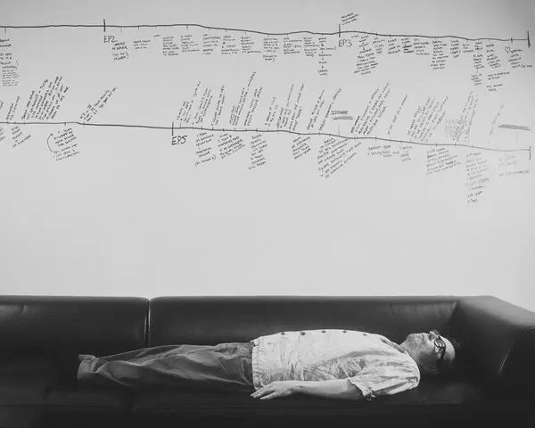
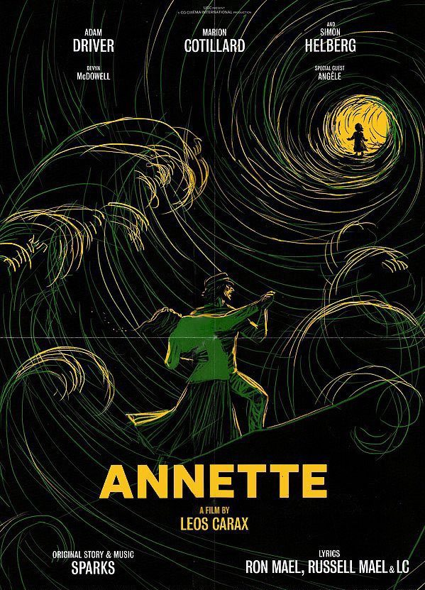

Рекомендации
Что посмотреть, послушать и куда сходить — коротко, со ссылкой на источник и на полный текст.
Культурные исследования Европы в пользу славного народа Палестины, или «Должно быть, это рай»
Элиа Сулейман снял фильм, в котором герой почти ни на что не влияет — и именно поэтому зритель остаётся наедине с собственными выводами.

Двое на качелях. Где здесь я и нужен ли я
Отзыв, написанный не для того, чтобы порекомендовать, а чтобы отрефлексировать увиденное — по горячим следам премьеры в театре им. Ленсовета.

В поисках вдохновения, или Как жить среди роботов и не сойти с ума
О рождении спектакля «Робот Костя» — первого в России роботического театра, где Чеховские страсти оказались подвластны и роботам.
Вера Полозкова — «Высокое разрешение»
Стихи, которые с каждым разом находят всё большее дыхание в музыке — и слушать их становится интереснее, чем многие песни.
Как не сойти с ума в этом мире, и ход королевы по правилам и без
«Ход королевы» сделал шахматы доступными даже для тех, кто брал в руки ферзя пару раз в жизни.

Красота в глазах смотрящего, или Дом Радио — иррациональный и величественный
С приездом Теодора Курентзиса абсолютом города стал Дом Радио. Текст о пространстве, в которое приходишь, чтобы измениться.

Курентзис. Знал, видел, чувствовал
Дебюсси, Равель, Стравинский и Эрик Сати в один вечер в Петербургской филармонии — и зал, переродившийся вместе с музыкой.

Смотрящий из бездны, или «Аннетт» — серьёзный разговор, который состоялся вовремя
Фильм Леоса Каракса, в котором конец истории не становится её пределом — предел каждый устанавливает сам.
Сила, которой завидуешь и преклоняешься — Майя Плисецкая
Момент, когда проблема эйджизма теряет смысл: ей 50, и она вневременная.
Герда, или Глоток воздуха, который замёрзнет на подлёте — но долетит ли?
Фильм Натальи Кудряшовой — стихами, о городе, сжатом снегом, и о том, готов ли ты взлететь.

Вообще всех жалко, а по отдельности никого, или «Медея» — за нас, про нас, против нас?
Фильм Александра Зельдовича, где слова не конкурируют с музыкой — а вопрос остаётся один: ты меня понимаешь?

Интервью В, или Времена не выбирают — в них живут
Вертинский во плоти на «7-м ярусе» Александринского театра — и вопрос о том, насколько человек беззащитен и ограничен своим телом.
Нет нужды писать
О том, что искусство не всегда спасает — и о попытке просто «дальше жить».
Дневник кинозала: люминальные пространства и фестивальный забег
Шесть коротких впечатлений подряд — от «Прыгунов» до бэкрумсов: чем зацепил и почему тренд на люминальные пространства так хорош, пока разгадка не наступила.
«Майкл» — впечатляюще, но похоже на агитку
Посмотрел бесплатно — и это, конечно, впечатляет: огромный бюджет, ремесленно выстроенный конфликт. Но контекст всех обвинений будто вычищен подчистую.
«Шурале» — надежда, которая рассыпалась
Хороший состав, красивая картинка — и всё равно фильм рассыпается. О том, когда актрисе рано быть режиссёром.
Фильм с крутым твистом, увиденный в Доме Радио
Титры идут почти в середине картины — и это оказывается ровно тем самым приёмом. Про пожилую пару, цветы и премиум-версию вознесения.
«Красная пустыня» Антониони — кино, которое чувствуешь
Первый цветной фильм режиссёра, где не хватало даже имеющегося цвета — а тема оказалась про кризис всего.
Новый Озон — снят красиво, как всегда
Чёрно-белая картина, в финале которой герою рубят голову, но не смыслы. Один из немногих поводов пойти в Дом Радио на такое.
Новый Джармуш — возможно, просто не мой фильм
Всё прекрасно выверено и хорошие ходы — но ощущение, будто режиссёр совсем постарел.
«Гамлет» Николая Коляды — физически грязный театр на грани китча
Мир на грани исчезновения, превращённый в большую помойку. Спектакль не для случайных зрителей — и почти манифест театрального зрителя внутри рецензии.
«Поклонница» — когда классик советского кино перегорает
Актёрский состав нешуточный, оператор снимал Балабанова — и всё равно фильм пытается выдавить слёзы пошло построенным романом.
«Небесный тапёр» — документальное признание в любви Каравайчуку
Гениальный советский пианист и композитор, которого министерство культуры не спешит показывать миру, хотя само же его и профинансировало.
«Верность» Нигины Сайфуллаевой — больше плохо, чем хорошо
Свободный каст готов на всё ради искусства — но фильм тонет в претензии на смыслы, которых там, кажется, и не было.
«Ирландец» — три с половиной часа классики, которую будут пересматривать
Скорсезе, омоложенные Де Ниро и Пачино, 309 сцен на 170 локациях — и герой, который просто плывёт по течению, потому что душа ему не нужна.
«Опасная жалость» и «Близкие люди» — когда режиссёр берёт верх над текстом, и когда нет
Макбёрни справился с романом Цвейга, не разгадав до конца, как это сделано. Бондарь не справилась с прозой Водолазкина — и с пространством малой сцены заодно.
Новый Лопушанский — почти чистая экранизация «Кроткой»
Ждал очередную русскую депрессуху, получил литературно-религиозную историю, достойную Достоевского. Максим Суханов — лучшая роль в российском кино за год.
«Тот самый Мюнхгаузен» и «Брачная история» — про то, что никто не хочет слушать другого
Проблема толерантности стоит во главе всех наших проблем. Захаров кричал об этом ещё при советской цензуре — сейчас это звучит только громче.
«Любовь» Гаспара Ноэ — искусство приходит вовремя, или не приходит вовсе
Диванные критики назвали его порно для интеллектуалов, а прокат в нашей стране запретили. О том, что бывает, если попал не в свой мир — или не в своё время.
«Эйфория» — сериал про наркотики, который на самом деле про непонимание
Портрет современного человека, предпочитающего электронное общение живому — и цена, которую за это платят.
«За белым кроликом» — терапевтический эффект второго текста об одном спектакле
Пишу уже второй пост про один и тот же спектакль Ромы Кагановича — потому что проговаривать однотипные фразы про качество произведения искусства слишком пошло.
«Философы» на «Любимовке» — читка, которая не дошла до постановки
В дни фестиваля молодой драматургии Театр.doc рвётся от напряжения и счастья — а лучшее из читок можно смотреть, не выезжая из своего города.
Теодор Иоаннович и Мастерская Современного Зрителя
Курентзис превратил Пермь из захолустной провинции в культурный центр — а потом его «изгнали» на родину ученических лет, в Петербург.
«Старший сын» — спектакль, которого больше нет в записи
Театр Ленсовета так и не опубликовал запись легендарной постановки Юрия Бутусова. Приходится вспоминать по видео, выложенному добрыми людьми.
«Кролик Джоджо» — фильм про нацизм, который понравился неожиданно сильно
Тайка Вайтити сыграл Гитлера как воображаемого друга десятилетнего мальчика — и получилась редкая удачная форма, слитая с содержанием.
«Дядя Ваня» Римаса Туминаса — спектакль, который работает даже на видео
Десять лет прошло с премьеры, приёмы уже смотрятся архаично — а катарсис всё равно случается, даже через экран.
«Маузер» Теодороса Терзопулоса — театр тела в прямом эфире
Александринский показал премьеру онлайн — и это на 180 градусов повернуло представление о театре на видео. Понимания хватило процентов на двадцать, но и этого достаточно.
Шум и антишум — лекция Евгения Вороновского, которую понадобилось время осмыслить
О физике звука, ставшей формой искусства — и о пространстве, которое невозможно просто скачать: только впустить в себя и прочувствовать.